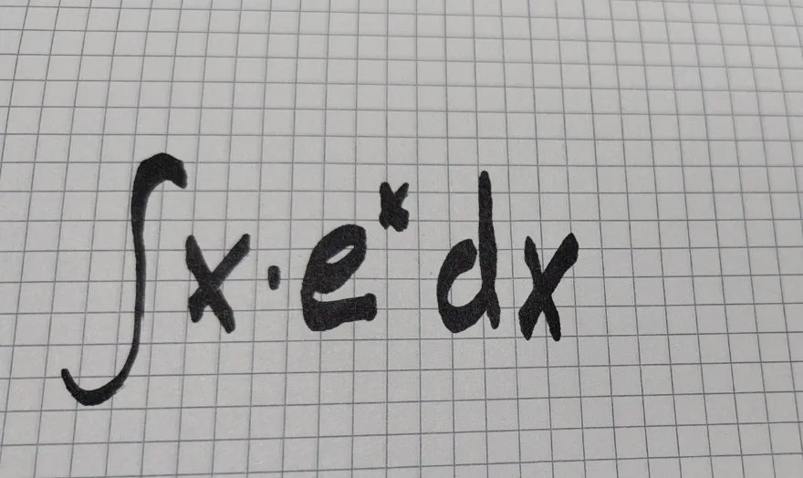

Oʻrnatuvchi
localSpace’ni oʻrnatadi va «Pusk» menyusiga qoʻshadi.
Oʻrnatuvchini yuklab olish- Fayl
localSpace-0.2.0-920b7123-windows-x64-setup.exe- Hajmi
- 37,1 MB
- SHA-256
c81a07b0d23741656fd2de6d320fef6ab21c9ec68db779d3f43e587d649a57ae
Hech narsa yuklab olinmasdan oldin ilova kompyuteringizga qaysi model mos kelishini va u soniyasiga nechta soʻz yozishini koʻrsatadi. Siz yozgan hamma narsa shu kompyuterda qoladi.

Avval qaraydi
Videokarta, uning xotirasi va tizim xotirasi — hech narsa yuklab olinmasdan oldin, kompyuterning oʻzida oʻqiladi. Hech narsa yuborilmaydi.
Sinov versiyasi sinov noutbukimizni 2026-yil 21-oktabrda shunday oʻqidi.
Tanlaydi
Har bir model yuklab olinmasdan oldin bu kompyuterda qanday ishlashini aytadi. Eng mosi birinchi turadi.
Oʻsha noutbukda oʻlchangan: soniyasiga 25,2 token.
Model satrlari — ilovaning oʻsha noutbukdagi oʻz soʻzlari, ingliz tilida.
Qwen3.5 4B Alibaba (Qwen)
Runs well — faster than you read: about 15 to 20 words a second.
25,2 token soniyasiga, oʻlchangan
Gemma 4 E2B Google
Runs well — faster than you read: about 15 to 20 words a second.
Gemma 4 E4B Google
Runs well — faster than you read: about 7 to 10 words a second.
Qwen3.5 9B Alibaba (Qwen)
Runs well — faster than you read: about 5 to 7 words a second. Needs most of this computer's memory: close other programs, such as your browser, before you use it.
Keyin siz soʻraysiz
Bitta qoʻlda yozilgan masala ingliz, rus va oʻzbek tillarida — kompyuterning oʻzida yechilgan.

Solve the problem in this picture and explain each step.
The problem is:
∫ x · eˣ dx
We’ll solve it using integration by parts, which uses the formula:
∫ u dv = uv - ∫ v du
Let’s pick:
Then:
∫ x·eˣ dx = uv - ∫ v du
= (x)(eˣ) - ∫ (eˣ)(dx)
= x eˣ - ∫ eˣ dx
∫ eˣ dx = eˣ + C (where C is the constant of integration)
So now:
= x eˣ - eˣ + C
x eˣ - eˣ + C
or factored as:
(x - 1)eˣ + C
✅ That’s the solution!
Oʻsha noutbukdagi Qwen3.5 4B: rasmni 16,9 soniyada oʻqidi, soʻng soniyasiga 25,1 token yozdi.
Реши задачу на этой картинке и объясни каждый шаг.
Хорошо, давай разберём интеграл:
∫ x · eˣ dx
Это интеграл от произведения функции — у нас есть x (линейная функция) и eˣ (экспонента). Для таких случаев удобно использовать метод интегрирования по частям.
Формула такая:
∫ u dv = uv - ∫ v du
Нужно выбрать, какая часть будет u (функция), а какая — dv (производная от другой части).
Обычно выбирают так:
Здесь:
∫ x·eˣ dx = u·v - ∫ v·du
= x·eˣ - ∫ eˣ dx
∫ eˣ dx = eˣ + C (где C — константа интегрирования)
Ответ:
x·eˣ - eˣ + C
Можно вынести общий множитель eˣ:
= eˣ(x - 1) + C
✅ Итоговый ответ:
∫ x·eˣ dx = eˣ(x - 1) + C
Если нужно — могу объяснить ещё проще или на другом языке, если хочешь.
Oʻsha noutbukdagi Qwen3.5 4B: rasmni 18 soniyada oʻqidi, soʻng soniyasiga 25,2 token yozdi.
Bu rasmdagi masalani yeching va har bir qadamni tushuntiring.
Bu integralni yechish uchun "integralsiz bo'lish" (integration by parts) usulidan foydalanamiz. Bu usul quyidagicha ishlaydi:
Formula:
∫u·dv = u·v - ∫v·du
Bizning holatda:
Shunday qilib:
Endi formulani qo'yamiz:
∫x·e^x dx = x·e^x - ∫e^x dx
∫e^x dx = e^x + C (C — integrallash konstantasi)
Demak:
∫x·e^x dx = x·e^x - e^x + C
Keling, ifodani qisqartiramiz:
= e^x(x - 1) + C
✅ Javob:
∫x·e^x dx = e^x(x - 1) + C
Bu javob to'g'ri va oddiy ko'rinishda.
Model «integralsiz boʻlish» deb yozdi, toʻgʻri atamasi «boʻlaklab integrallash». Javobni oʻzgartirmadik.
Oʻsha noutbukdagi Qwen3.5 4B: rasmni 17,8 soniyada oʻqidi, soʻng soniyasiga 25,6 token yozdi.
Maxfiy
Ilova hech narsa yubormaydi: savollaringizni ham, javoblarini ham, undan qanchalik tez-tez foydalanishingizni ham.
localSpace’ni oʻrnatadi va «Pusk» menyusiga qoʻshadi.
Oʻrnatuvchini yuklab olishlocalSpace-0.2.0-920b7123-windows-x64-setup.exec81a07b0d23741656fd2de6d320fef6ab21c9ec68db779d3f43e587d649a57aeHech narsa oʻrnatilmaydi: arxivni oching va localSpace’ni papkadan ishga tushiring.
Zip’ni yuklab olishlocalSpace-0.2.0-920b7123-windows-x64-portable.zip5dd1a7f0c3f1964208fa235bfb12c15f398413d23bdcf98dc86bcb5960e25737«Yuklab olish» tugmalari har bir fayl boʻyicha kunlik bosishlarni sanaydi va siz haqingizda hech narsa saqlamaydi. Hisoblagich kodi ochiq.
PowerShell’da, fayl turgan papkada quyidagini bajaring:
Get-FileHash .\localSpace-0.2.0-920b7123-windows-x64-setup.exe -Algorithm SHA256Natijani yuqoridagi SHA-256 bilan solishtiring. Agar ikki qiymat farq qilsa, faylni ishga tushirmang.
Windows 10 yoki 11, 64-bit. Modellar ilova ichida alohida yuklab olinadi: bir necha GB, kompyuteringizga qarab tanlanadi.
Oʻlchangan: Qwen3.5 4B — soniyasiga taxminan 6–7 token (ingliz tilidagi javoblar), Core i7 va Intel Iris Xe grafikali, NVIDIA videokartasiz, 8 GB xotirali noutbukda, brauzer va VS Code ochiq holda.
Agar Windows «Windows protected your PC» (rus tilidagi Windowsda «Система Windows защитила ваш компьютер») desa, More info (Подробнее), keyin Run anyway (Выполнить в любом случае) tugmasini bosing.
Agar Windows oʻrnatuvchini ochmasa. Baʼzi kompyuterlarda Smart App Control yoqilgan boʻladi va u yangi nashriyotchilarning dasturlarini toʻxtatishi mumkin. localSpace hali imzolanmagan, shuning uchun shunday boʻlishi mumkin. Biz bu ustida ishlayapmiz. Yuklab olingan fayl haqiqiyligini yuqoridagi SHA-256 orqali tekshirishingiz mumkin. Smart App Control’ni oʻchirishni tavsiya qilmaymiz.
Kompaniyalar uchun serverlar tez orada.
Bizga yozing: Telegram guruhimizda yoki locallabs.io@gmail.com